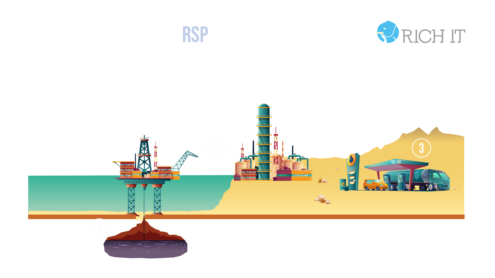

Plataforma compuesta por herramientas de software libre integradas y soportadas por RICH IT cuyas funcionalidades de adquisición, integración, análisis y gobierno de grandes volúmenes de datos en tiempo oportuno, ayudarán al cliente a generar un lago de datos gobernado que facilite la explotación de la información de acuerdo a las necesidades del Cliente. Puede ser instalada en la nube u on premises y desde la ingesta hasta el Modelado y el BI.